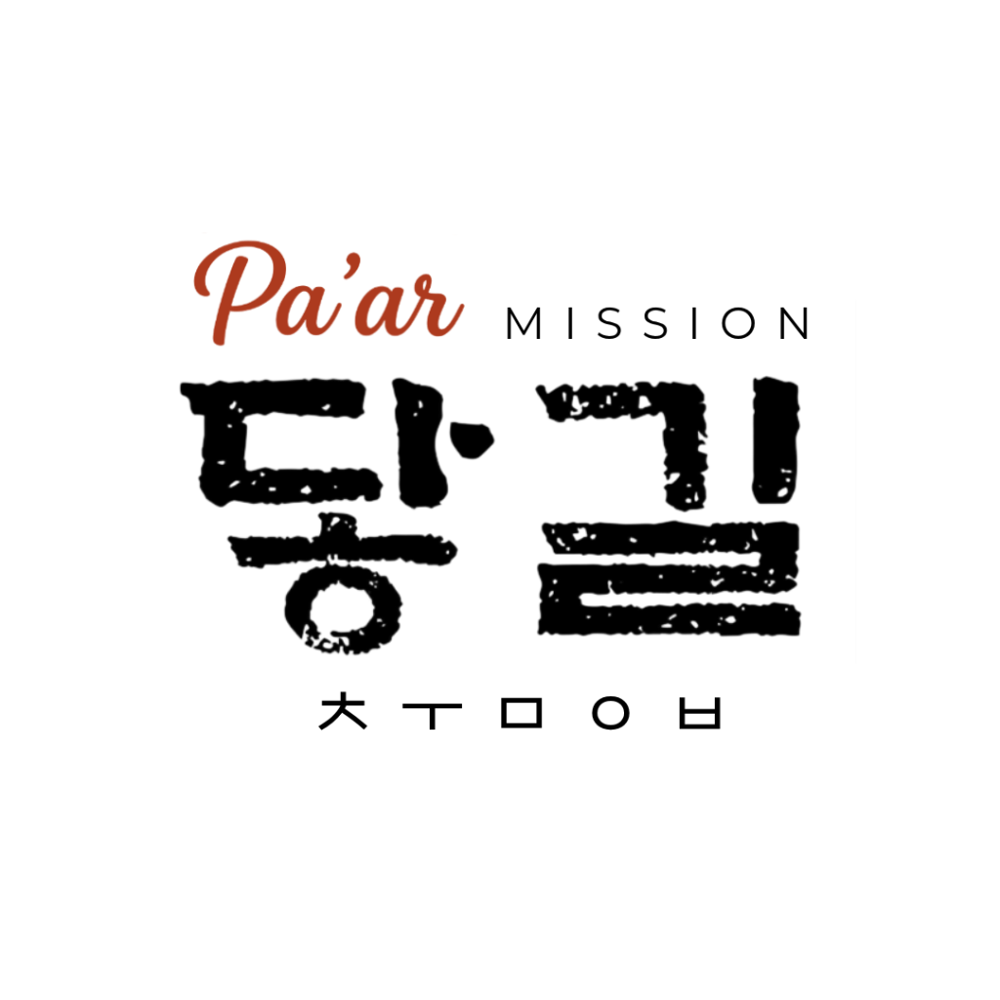

하나님 나라 확장을 위한 다섯 가지 핵심 사역
현지 교회와 한국 교회의 동반자적 협력 선교
현지 교회와 한국 교회 간의 일방적 지원 관계를 넘어, 복음 안에서 상호 동역하는 언약적 파트너십을 구축합니다.
예술과 문화를 통한 복음의 창의적 선포
문화와 예술을 통해 복음을 창의적으로 전하며, 현지 문화권에 적합한 선교 방법을 개발합니다.

춤 예배를 통해 하나님의 구원을 선포하고,
그의 영광을 열방 가운데 드러내는 사명을 감당합니다.
"새 노래로 여호와께 노래하라 온 땅이여 여호와께 노래할지어다
그의 영광을 이방 가운데, 그의 기이한 행적을 모든 민족 가운데 선포할지어다" — 시편 96:1–3
「닿길」은 단순한 문화 활동이나 예술 사역이 아니라, 복음적 사역으로서 다음 세 가지 정체성을 지닙니다.
우리의 움직임은 표현이 아니라
하나님께 드리는 예배입니다.
우리의 춤은 감정이 아니라
복음의 진리를 전달하는 통로입니다.
개인의 표현이 아니라
교회의 예배와 선교를 돕는 도구입니다.
복음 위에 서는 건강하고 자립적인 교회 세우기
현지 교회가 외부 의존을 넘어서, 복음과 말씀 위에 서는 건강한 교회로 자립하도록 돕습니다.
다음 세대를 복음으로 세우는 교육 사역
현지 청소년·청년 세대에게 복음을 전하고, 말씀 위에 세워진 다음세대 지도자를 양성합니다.
복음적 동기에서 비롯된 이웃 사랑 실천
사회적 약자와 소외된 자들을 섬기며, 복음의 실제성을 삶으로 증거합니다.